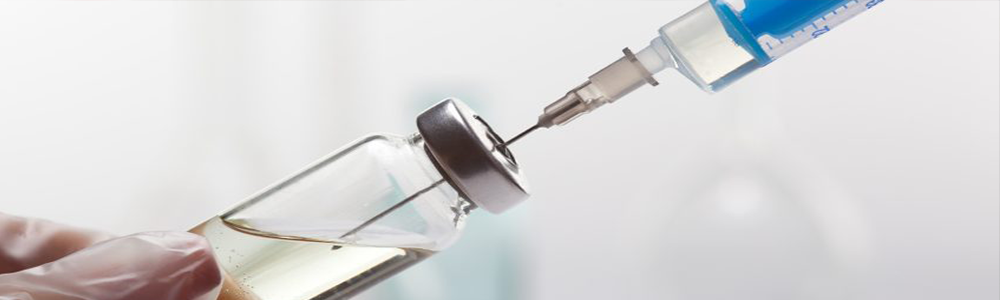
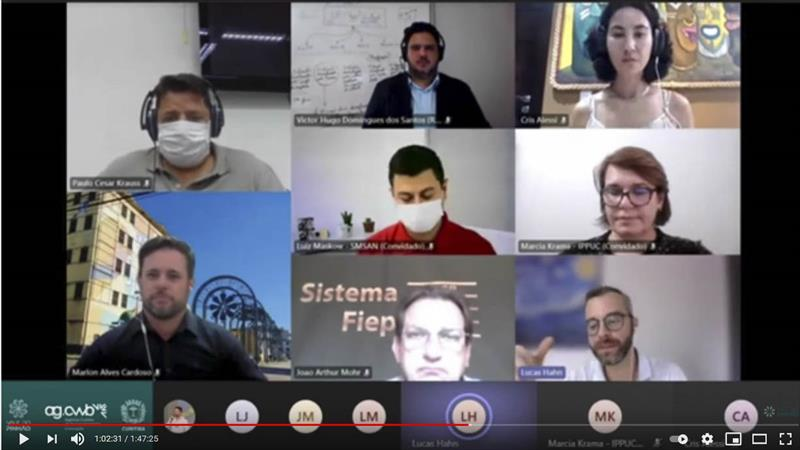
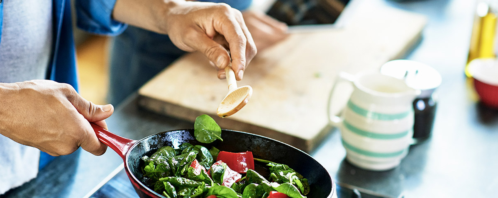

O MUNDO JÁ POSSUI CERCA DE 1,5 MILHÕES DE RECUPERADOS DA COVID-19
Desde que surgiu, no fim de dezembro de 2019 em Wuhan, na China, a covid-19 fez muitas vítimas. Mas, um número muito maior de pessoas se recuperou do quadro. Segundo dados da Universidade Johns Hopkins, dos 4,2 milhões de contaminados pelo novo coronavírus no mundo todo, cerca de 1,5 milhão de pessoas já se "curaram" (1.482.583 recuperados). No Brasil, mais de 67 mil pacientes superaram a doença.
De acordo com a OMS, mais de 80% dos casos da doença são leves e, entre os 20% graves, nota-se um acometimento de vários órgãos do corpo com sequelas que devem durar por meses após a alta hospitalar.
O que se sabe sobre o Sars-CoV-2 ainda é pouco, principalmente para falar em cura. O potencial de transmissão após o desaparecimento dos sintomas, assim como a imunidade ao vírus são incógnitas para a ciência. É por isso a própria OMS prefere usar outro termo para se referir aos que já não apresentam os sinais da covid-19: os recuperados.
Como não há testes suficientes para mostrar se os pacientes estão mesmo livres da doença, não apresentar mais os sintomas tem sido o critério para definir a recuperação. "É claro que a gente olha os exames de sangue, os marcadores de inflamação, se estão melhores, mas o que importa mesmo é a melhora clínica", diz João Prats, infectologista da BP - A Beneficência Portuguesa de São Paulo. Segundo o médico, conta-se 14 dias após o início dos sintomas.

Quanto tempo leva para a cura?
A recuperação do coronavírus depende de diversas variáveis: idade, sexo e outras comorbidades que podem agravar o quadro (asma, diabetes, obesidade, hipertensão, por exemplo). Quanto mais grave a doença, mais demorada é a recuperação. "Geralmente são necessárias seis semanas para se recuperar, mas quem sofre de quadros muito graves pode levar meses", disse Mike Ryan, diretor executivo do Programa de Emergências em Saúde da OMS, em entrevista em março.
De acordo com André Ribas, médico epidemiologista da Faculdade São Leopoldo Mandic, são notadas melhoras em pessoas de todas as idades, mas a taxa de mortalidade depende muito da faixa etária.
A OMS estima que uma pessoa em cada 20 necessitará de tratamento intensivo, o que pode incluir sedação e oxigenação. E recuperar-se do tempo em uma UTI (unidade de terapia intensiva), demora. "Esse tempo varia, dependendo da resposta inflamatória. Muitas vezes as complicações podem ser tanto pulmonares quanto cardiovasculares, então depende de quais complicações o paciente teve", diz Ribas.
PESQUISA DIVULGA EFEITOS DA COVID-19 NA ECONOMIA DA CIDADE
Os efeitos causados pela pandemia do novo coronavírus nos negócios e na economia curitibana e as estratégias desenvolvidas em meio ao cenário de emergência sanitária foram publicados no Estudo de Impacto Empresarial da Covid-19, desenvolvido pela Agência Curitiba a partir do programa Invest Curitiba, em parceria com o Sebrae-PR e com o apoio técnico da Realize Hub.
Os resultados foram divulgados, nesta quarta-feira (27/1), em evento on-line promovido pelo Vale do Pinhão e transmitido pelo Youtube. A pesquisa reuniu dados e deu origem a uma ferramenta de análise dos efeitos da pandemia na economia local. O objetivo é a adoção de medidas conjuntas de prevenção e enfrentamento dos impactos na vida empresarial e na economia da cidade.
Entre os principais desafios apresentados pelos empresários estão a queda no faturamento, diminuição ou suspensão das atividades, aumentos nos custos de insumos e matéria-prima, além da falta de recursos. O estudo também aponta que devido a pandemia as empresas precisaram avançar na digitalização dos processos.
A presidente da Agência Curitiba, Cris Alessi, conduziu a live e explicou que o trabalho começou em março, com a busca de parceiros que ajudassem a levantar e avaliar semanalmente o impacto da pandemia na cidade. “A pesquisa serviu como ponto de partida para o Plano de Retomada Econômica da cidade e para a criação do Fundo Garantidor de Aval de Curitiba, que já viabilizou mais de R$ 2,3 milhões em empréstimos para empreendedores de Curitiba", disse Cris Alessi.
Empreendedores responderam formulários eletrônicos com 41 questões que abordaram os impactos percebidos nos âmbitos de pessoal, operacional e financeiro. Também foram levantadas informações sobre as medidas de redução de impactos adotadas e as impressões sobre o cenário atual e futuro. O levantamento das informações ocorreu em dois períodos: de 6 de maio a 10 de junho e de 20 outubro a 13 de novembro do ano passado. Uma nova rodada da pesquisa deverá ser aplicada na segunda quinzena de março deste ano.

O estudo deu origem a dois produtos, dashboard estratégico e um infográfico que estão disponíveis no site do Invest Curitiba. São dados que oferecem um panorama geral de um cenário econômico influenciado por diversos fatores tais como legislações, restrições de atividades, apoios emergenciais, planos de suporte público, finanças privadas e públicas, desenvolvimento tecnológico, entre outros fatores.
Para Lucas Hahn, coordenador estadual de mercado e varejo do Sebrae/Pr, a pesquisa aponta dados relevantes para ações articuladas em diferentes setores.
HOSPITAL DE CURITIBA REGISTRA FILA DE AMBULÂNCIAS
Uma fila de cinco ambulâncias se formou no início da tarde desta quinta (17) na frente no Hospital Angelina Caron, em Campina Grande Sul, na Região Metropolitana de Curitiba. De acordo com informações apuradas pela reportagem do Bem Paraná, alguns pacientes aguardavam leitos Covid e outros vagas para outras enfermidades. Segundo boletim da Secretaria de Estado de Saúde, o hospital não tinha uma vaga sequer em Unidades de Terapia Intensiva e enfermarias Covid SUS, e também em UTIs gerais.
O Hospital Angelina Caron confirmou, em nota encaminhada pela assessoria de imprensa, que o aumento do número de casos de pacientes com Covid-19 está pressionando todo o sistema de saúde e, em alguns momentos, gerando filas de espera de ambulâncias com pacientes que necessitam de internamento. As filas incluem pacientes com covid e também pacientes de outras especialidades. "Nesta quinta-feira (17), houve fila de cinco ambulâncias, dentre elas, apenas um paciente estava com Covid-19.
A superlotação está longe de ser exclusividade do Hospital Angelina Caron. O Hospital do Trabalhador, em Curitiba, por exemplo, registrava taxa de ocupação de 100% em UTIs e leitos de enfermaria na quarta. O Hospital de Reabilitação, em Curitiba, o Hospital do Rocio, em Campo Largo, e o Hospital São Sebastião da Lapa também apresentavam 100% de taxa de ocupação em UTI. O número de pacientes à espera de um leito na Grande Curitiba chegava ontem a 294 pacientes, sendo 156 na fila de uma vaga em UTI e 128 aguardavam um lugar em leitos de enfermaria. Em todo o Paraná, a fila chega a 879 pacientes. As UTIs Covid SUS de Curitiba estão há 22 dias com lotação acima de 100%, alcançando o ápice em 1 de junho, com 104%.
"Com a flexibilização das medidas restritivas, as pessoas estão achando que está tudo sob controle. E não há nada sob controle. A pressão no sistema de saúde não diminuiu e tende aumentar nos próximos dias. As equipes de saúde, dos socorristas aos médicos intensivistas estão exaustos", disse um médico que atua em dois hospitais da Região Metropolitana de Curitiba.
SAÚDE MENTAL: COMO MANTER O BEM-ESTAR EM TEMPOS DE PANDEMIA
A pandemia do coronavírus já dura vários meses e, durante esse período, a liberdade de ir e vir e o convívio social foram limitados. Para cumprir a quarentena de maneira correta, o distanciamento social foi indicado por governos e instituições de saúde no mundo todo. No entanto, a solidão causada por essas restrições levantou outra preocupação: a saúde mental na pandemia. Com uma nova onda de casos crescendo, as medidas de prevenção para COVID-19 ainda devem ser seguidas, mas o cuidado com o bem-estar psíquico deve ser levado a sério.
De acordo com a Organização Mundial da Saúde (OMS), o Brasil é o país que apresenta maior prevalência de depressão na América Latina. É também o país mais ansioso do mundo. E, para profissionais da psiquiatria, a solidão é reconhecida como um gatilho - um impulsor - de transtornos de humor.
Frente a um cenário de pandemia, a comunidade médica se preocupa que uma epidemia paralela afete a saúde mental da população brasileira. O aumento do sofrimento psicológico, dos sintomas psíquicos e dos transtornos mentais já dão indícios nesse período que foi marcado como o primeiro pico dos casos.
Para suprir uma demanda alta e ajudar os brasileiros na compreensão desse momento tão intenso, diversos profissionais de psicologia estão realizando acolhimentos virtuais.
4 Dicas para cuidar da saúde mental durante a pandemia
Além dos cuidados profissionais, existem pequenas ações no cotidiano que podem ajudar no processo de lidar com a pandemia e com o distanciamento social. Confira algumas dicas para iniciar uma rotina mais leve e de autocuidado:
- ★ Lembre-se que você não está sozinho. Todos estão na mesma situação. E, apesar disso, cada um encontra uma melhor forma de lidar com este momento. Não se compare com outras pessoas e tente encontrar o que mais funciona para você.
- ★ Este é um momento intenso e fora do comum. É completamente normal se sentir triste, assustado e/ou menos produtivo que o habitual. Uma pandemia e o distanciamento social geram diversas emoções que são difíceis de lidar. Novos sentimentos são esperados. Não se cobre para estar bem 100% do tempo.
- ★ Observe suas demandas internas. Abafar e ignorar sentimentos não é saudável. Tente colocar tudo o que está acontecendo no mundo em perspectiva e relacione ao que você está sentindo - estão interligados? Se colocar como parte do todo vai trazer autoconhecimento e facilitará encontrar o equilíbrio da situação.
- ★ Limite o tempo ligado nas notícias. É importante estar informado, mas são muitos processos acontecendo ao mesmo tempo - e todos eles bastante intensos. Mudanças na rotina de trabalho, no relacionamento com amigos e família, dilemas políticos e financeiros em todo o mundo. Estipule quanto tempo do seu dia você pode se dedicar ao consumo de notícias e, se necessário, reduza. Não se esqueça de buscar fontes oficiais para evitar notícias falsas.
QUARENTENA: COMO GERAR RENDA NA PANDEMIA
Nos últimos tempos, o coronavírus deixou o Brasil e o mundo em alerta. As recomendações da Organização Mundial da Saúde tem o objetivo de evitar que um número excessivo de pessoas seja infectada. Uma das principais medidas para a contenção do COVID-19 é a quarentena. Afinal, com isolamento social é possível reduzir o contágio do vírus.
Não consigo trabalhar na quarentena, e agora?
A regra é se isolar. Mas e os boletos? Entendemos como a quarentena impacta quem não tem renda fixa. Ou seja, profissionais autônomos, pessoas jurídicas, empregadas domésticas, freelancers e tantas outras pessoas que tiveram que deixar de trabalhar e, consequentemente, de receber também. Pensando nisso, vamos te ajudar nessa questão:
• Organização e Dinheiro
Aproveite o tempo livre e coloque a casa no lugar. Organize suas roupas, itens pessoais, utensílios de casa e o que mais tiver. Então, separe objetos que você não utiliza e que estejam em bom estado. Essa é uma boa oportunidade de ganhar dinheiro!
Os objetos que você não usa mais podem ser úteis para outras pessoas. Anuncie tudo em sites de vendas online. Essa é uma solução inteligente para os tempos de crise. Além do mais, comprar e vender itens de segunda mão é tendência consciente para a nova década, uma vez que reduz o consumo e exploração do meio ambiente.
• Cozinha a todo vapor
A quarentena alterou a rotina de muitas pessoas. Dentre elas, as que não cozinham. Quem fazia as refeições fora de casa, hoje utilizam o delivery para se alimentar sem sair de sua residência. Mas vamos combinar que pedir comida todo dia acaba com o orçamento, não é? É aí que você pode entrar!
Doces, tortas, comida do dia a dia, bolos, pratos típicos ou qualquer outro? A ideia aqui é você produzir refeições e vendê-las. Divulgue em suas redes sociais, grupo do condomínio, para amigos e família. A princípio, faça a produção conforme os pedidos forem chegando. Dessa forma, você evita desperdícios e prejuízo.

IMPORTANTE: se em sua residência tiver caso confirmado ou suspeito de contaminação pelo COVID-19 – NÃO prepare alimentos que serão consumidos por outras pessoas.
• Ganhe dinheiro online
O período de quarentena pode aumentar a demanda por trabalhos feitos à distância. Aproveite essa onda, ocupe seu tempo e ainda ganhe dinheiro. Não precisa de formação universitária ou cursos na área. Apenas seja bom naquilo que faz. E claro, algo que possa ser realizado diretamente da sua casa.
Confira exemplos de atividades:
– Artesanato;
– Costura;
– Elaboração de convites;
– Aulas de idiomas;
– Aulas de reforço para as crianças que estão em férias antecipadas;
– Edição de fotos;
– Produção gráfica
Qualquer talento que você tiver e puder ser usado como serviço vai te ajudar a ganhar um extra para fechar as contas.
Mais do que nunca, é importante que você tenha seu orçamento na ponta do lápis. Afinal, sem metas e valores definidos fica mais difícil estabelecer o caminho. Corte gastos desnecessários. Por fim, saiba exatamente o valor que faltará para fechar as contas ao final do mês. Isso te ajudará a passar por essa fase. Fique de olho nas notícias para saber quais contas serão afetadas nessa etapa isolamento. Alguns boletos como água e luz podem ser adiados. Fique de olho nos pronunciamentos do governo de seu município/ cidade/ estado para saber direito o que priorizar.
MAIS NOTÍCIAS SOBRE O BRASIL E O MUNDO EM BREVE!